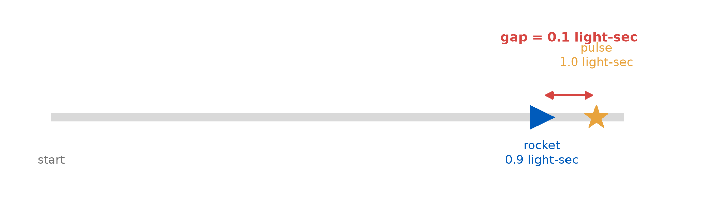
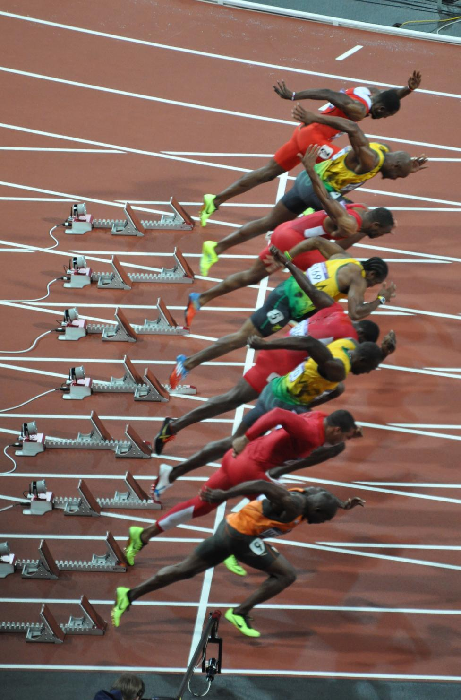
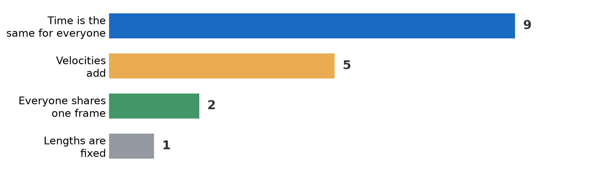
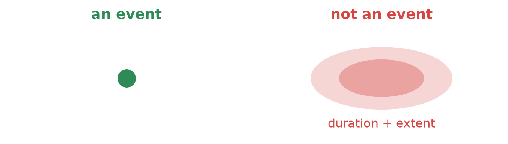
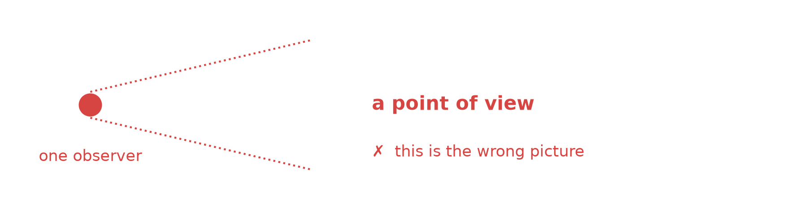
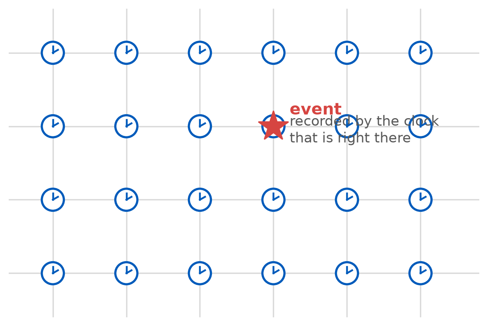
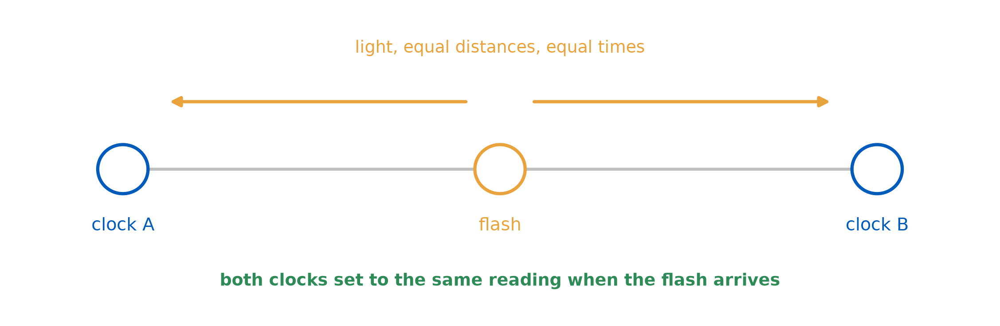
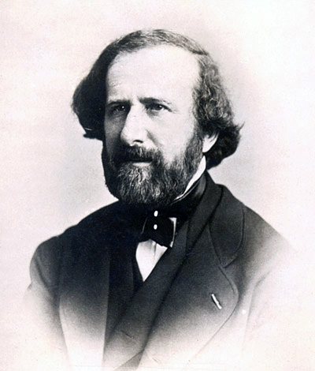
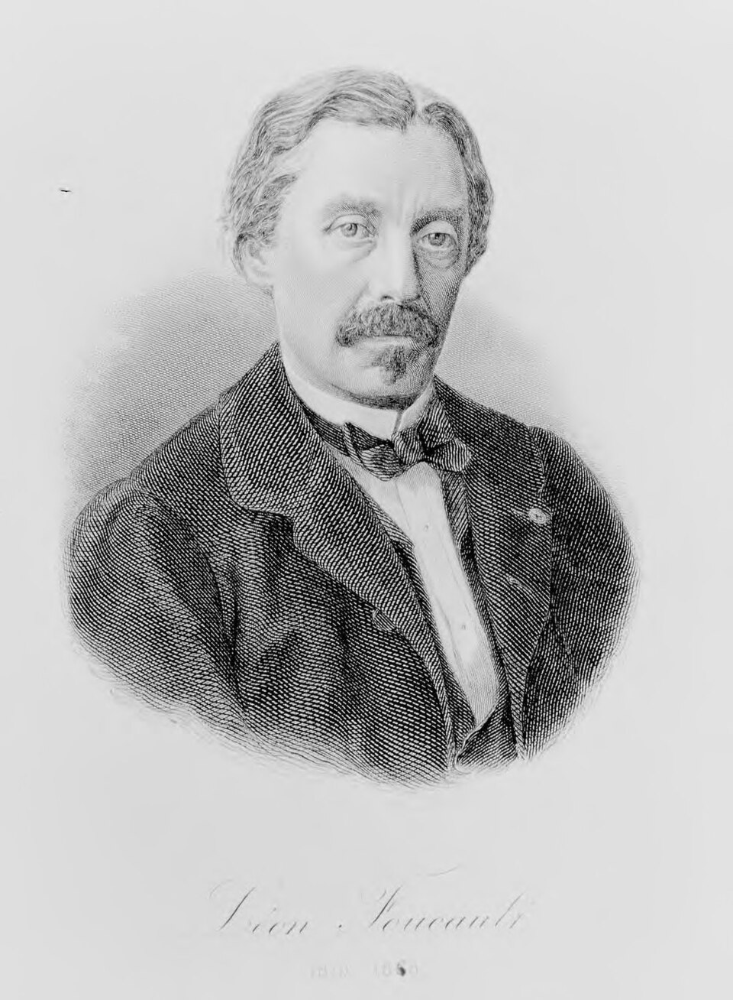

Events, Frames, and How to Measure Them
PHY 208 · Special Relativity · Lecture 3
Tim Thomay
2026-09-01
Before we start: presentation pairs
Deadline: Thursday, end of class. The join button disappears at 12:20 — Brightspace enforces it. “Over the weekend” does not work.
How to join
Groups on the course navbar → View Available Groups → Join Group
Then tell your partner which group — they join the same one.
Groups are named after physicists from this unit — Rømer, Bradley, Fizeau … Kennedy. Nothing distinguishes them; take whichever is free.
How to check
Go back to Groups.
You should see both names in the group.
One name means your partner has not joined — you are not paired.
Two observers moving relative to each other cannot agree about distances and times.
Fine. But before we can say how they disagree —
Thursday’s question
A rocket flies away from you at \(0.9c\) and fires a laser pulse straight ahead.
How fast does the pulse pull away from the rocket?
| pilot measures | you reckon | |
|---|---|---|
| (a) | \(c\) | \(c\) |
| (b) | \(c\) | \(0.1c\) |
| (c) | \(0.1c\) | \(c\) |
| (d) | \(0.1c\) | \(0.1c\) |
80% of you said \(c\) and \(c\)
“Light is always \(c\), so it must be \(c\) for both.” The first half is right.
(b) — pilot measures \(c\); in your frame the gap grows at \(0.1c\).
Count it out, in your frame
After 1 second, measured by you:

The gap opened by 0.1 light-seconds in 1 second. That is a rate of \(0.1c\) — and the pulse still moved a full light-second.
The same thing, without any light
Two cars leave a junction in opposite directions, each at 60 mph.
The distance between them grows at 120 mph —
but no car broke the speed limit.
Nobody thinks 120 mph is a speed of a car. Same logic, same mistake.
Speed of what, measured by whom?
Always \(c\)
The pulse, measured by the pilot.
The pulse, measured by you.
Any light beam, any inertial frame.
Not a speed of light
The gap between rocket and pulse: \(0.1c\) in your frame.
Two beams fired apart: the gap closes at \(2c\) in your frame.
Nothing travels at \(0.1c\) or \(2c\) here. A gap is not an object.
Both of you measure the pulse itself at exactly \(c\) — even though one of you chases it at \(0.9c\). So what has to give?
Why it matters: the 100 m
| Time | Athlete | Meet |
|---|---|---|
| 9.58 | Bolt | Berlin 2009 |
| 9.69 | Bolt | Beijing 2008 |
| 9.72 | Bolt | New York 2008 |
| 9.72 | Powell | Lausanne 2008 |
| 9.74 | Powell | Rieti 2007 |

Sound crosses 100 m in 0.29 s · light in 330 ns.
The sound delay is 2.7× the gap between first and second.
What you predicted this morning
Prep check 1: name one everyday intuition that must break. 18 of you answered.

Half of you named time. That is the right instinct — and it is not the thing that breaks first.
Two of you went further
“Either the distance or the time variable has to change.”
“You would not be able to meet the family or friends you used to know.”
The first one has the whole argument in a sentence: \(v = d/t\), and if \(v\) is nailed down, something else has to give.
Today: what exactly is the \(d\), and what exactly is the \(t\)?
Today is unglamorous and load-bearing
No paradoxes. No twins. No \(E = mc^2\).
Instead: what does it actually mean to measure when and where something happened?
An event
An event is a single happening at a single place at a single moment.
Four numbers: \((t, x, y, z)\)
- Two particles collide
- A clock reads noon
- Light reaches a detector
- A firecracker’s first flash

“A firecracker explodes” is not an event — milliseconds, centimetres.
What a reference frame is not
A frame is not a point of view.
A frame is not where somebody is standing.

What a reference frame is
A latticework of rulers and synchronized clocks, filling all of space.

Why this construction matters
Naive picture
One observer, one clock, watching from a distance.
Must correct for light travel time.
Confuses seeing with happening.
Latticework
Clocks everywhere, each recording locally.
No corrections needed.
Data collected afterward at leisure.
Now the hard part
The lattice needs its clocks synchronized.
Two clocks, 300 m apart. How do you set them to the same time?
Einstein synchronization

Flash a light at the midpoint. When it arrives, set both clocks to the same reading.
You synchronize two clocks 300 m apart using a flash at the midpoint. Your friend, moving past at \(0.6c\), watches you do it.
Does your friend agree the clocks are synchronized?
(a) Yes — the procedure is symmetric
(b) No — she says one was set too early
(c) Only if she is also at the midpoint
(d) The question is meaningless
How fast is light, and how would you know?
Galileo tried it. Two lanterns, two hilltops, two assistants, and a shutter.
He concluded only that light is “if not instantaneous, extraordinarily rapid.”
What would you need, to do better?
Rømer, 1676 — the first number
Jupiter’s moon Io eclipses on a strict schedule.
Except it runs late when Earth is far from Jupiter, and early when close.
Extra distance across Earth's orbit : 2.992e+11 m
Accumulated delay Rømer measured : 22 minutes
→ c ≈ 2.267e+08 m/s
modern value 2.998e+08 m/s (about 24% low)
Wrong by a quarter — and it settled the question that mattered:
light does not arrive instantly.Bradley, 1728 — aberration
Starlight arrives tilted — Earth moves while the light comes down.
Like running through vertical rain: you tilt the umbrella forward.
tilt ≈ 20.5 arcsec
c = v/tan(θ)
≈ 2.996e+08 m/s
Fizeau and Foucault — bringing it to the lab

Fizeau, 1849 — toothed wheel
8 km to a mirror and back. 313,300 km/s

Foucault, 1850 — rotating mirror
Better precision — then light in water.
Michelson made it his life’s work
1879 — rotating mirror, improved · 299,910 ± 50 km/s
1926 — Mt. Wilson to Mt. San Antonio, 35 km baseline · 299,796 ± 4 km/s

1983 — the question dissolves
The metre is now defined as the distance light travels in \(1/299{,}792{,}458\) of a second.
So \(c = 299{,}792{,}458\) m/s — exactly, by definition, with no uncertainty.
You can no longer measure the speed of light.
You measure lengths with it.
The catch nobody mentions
Every method on the last five slides measured a round trip.
- Rømer — light out to Earth, but timed against a periodic source
- Fizeau, Foucault, Michelson — out to a mirror, and back
- Modern interferometry — out and back
We have never measured the one-way speed of light.
So why not put a clock at each end and time it one way?
Convention, not ignorance
Einstein’s response: define the one-way speed to be \(c\) in both directions.
That is exactly what the midpoint-flash synchronization does — it assumes the two paths take equal time.
Why not just carry a clock over?
The obvious answer to synchronization: set two clocks side by side, then walk one of them 300 m down the track.
This fails — and how it fails is the subject of L05.
You are the lattice
Everyone: phone out → time.ms. You are a lattice point.
Read your Time Offset — in milliseconds — and the round-trip delay.
Predict first — write it in your notebook, before we compare:
Your neighbours’ offsets match yours — yes or no?
If they differ, by how many ms? More or less than the time light needs to cross this room?
Three things a frame is not
Not a person
Nobody has to be watching. The lattice records whether or not anyone reads it.
Not a place
It fills all of space. There is no “where” the frame is.
Not a view
It measures. It does not see.
So — where is the train’s frame?
Reading the lattice: a worked case
A firecracker’s first flash — one event. Three lattice clocks are nearby.
| Clock | Position | Reading at the flash |
|---|---|---|
| \(C_1\) | at the firecracker | 12.000000 s |
| \(C_2\) | 300 m away | 12.000000 s (its own reading later, when light arrives) |
| \(C_3\) | 900 m away | 12.000000 s (likewise) |
The event’s time is \(t = 12.000000\) s. Read off \(C_1\) — the clock that was there.
A number for the sceptics
Light covers 30 cm in one nanosecond.
Across this room (10 m): 33 ns
Buffalo to New York (470 km): 1.6 ms
Earth to Moon: 1.3 s
Where this leaves us
Settled today
An event is a happening: \((t,x,y,z)\)
A frame is rulers + synchronized clocks
Each event is read off the local clock
Synchronization is a definition
Open until Thursday
Does a moving observer agree the lattice is synchronized?
You voted. Most of you said no.
You were right — and it costs more than you think.
Activity
Self-check with a partner — events and reference frames
§II Events — classify: object, location, instant, or event?
§III Reference frames — the beeper and the horn.
Then swap and mark each other.
Keep these pages — Milestone 1 builds on them.
Thursday
The relativity of simultaneity
We return to the question you just voted on — and it turns out the answer breaks something you have believed your whole life.
Reading: TW ch. 3 · Watch: Khutoryansky, Nature of Time and Simultaneity (8 min)
Exit ticket
A classmate says: “A reference frame is just where you’re standing and what you can see.”
In one or two sentences, what is wrong with that?
Scan it, or find it on UB Learns. Due 11:59 tonight.
Not graded, ever — I read these to decide what to spend class time on. “I don’t follow this, and here is where I lost it” is a useful answer.
PHY 208 — Events, Frames, and How to Measure Them Tim Thomay · University at Buffalo · Fall 2026
Course material licensed CC BY-SA 4.0
Images retain their original licenses — see img/CREDITS.md